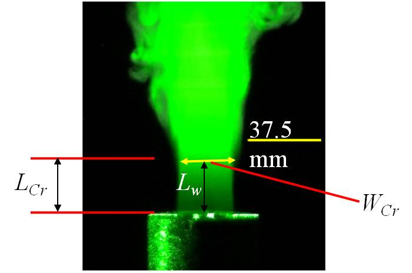
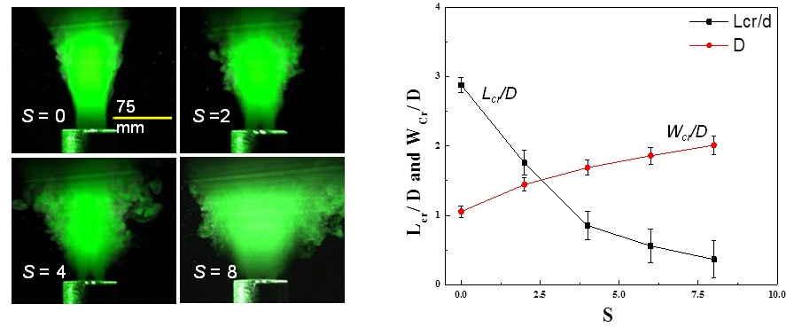
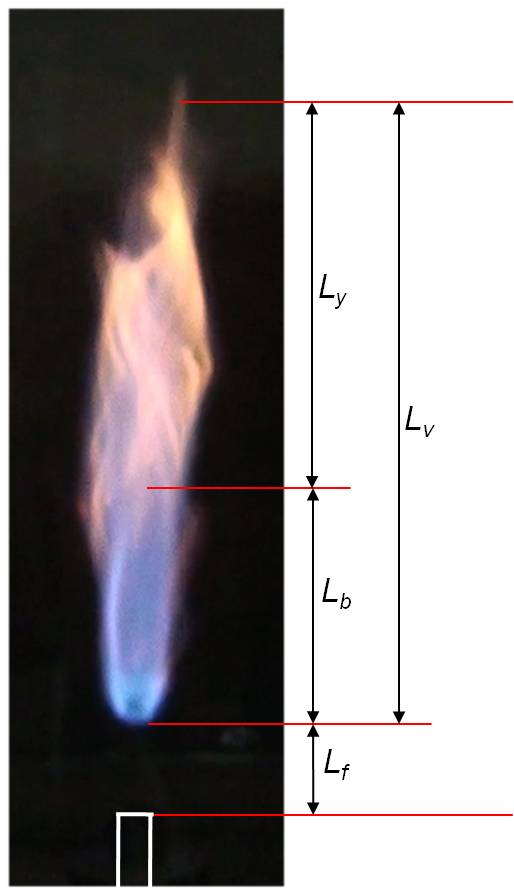
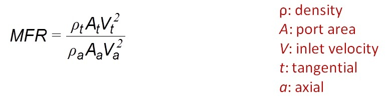
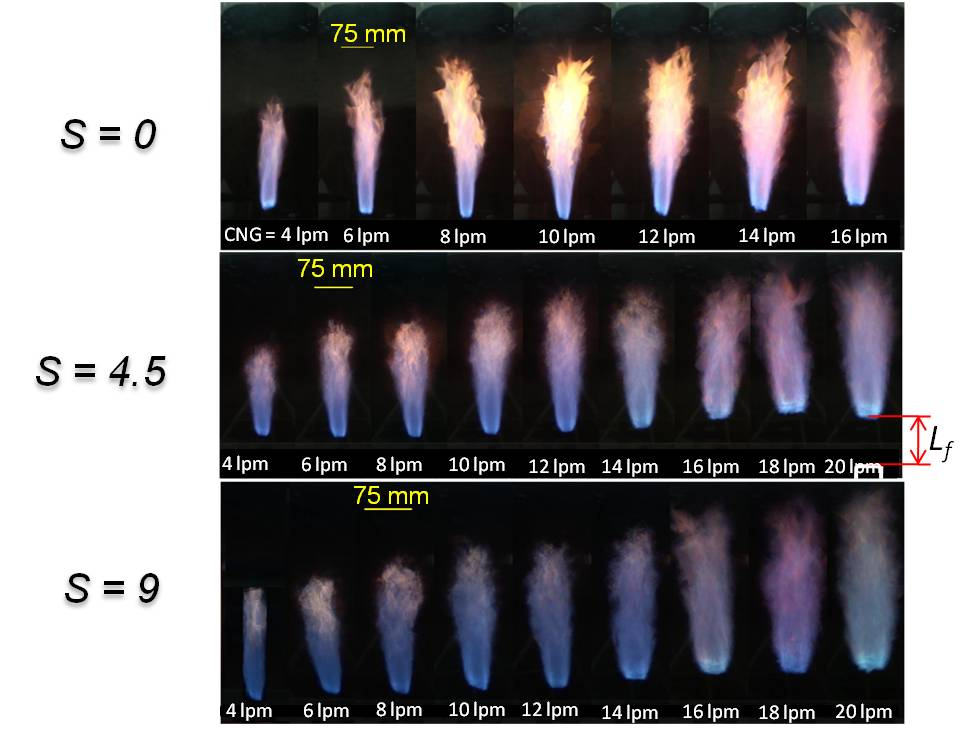
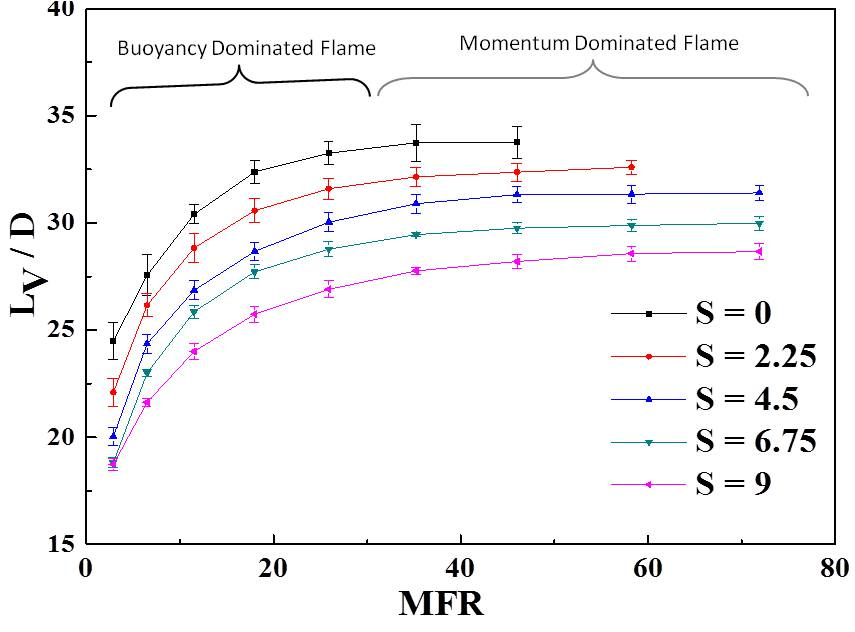
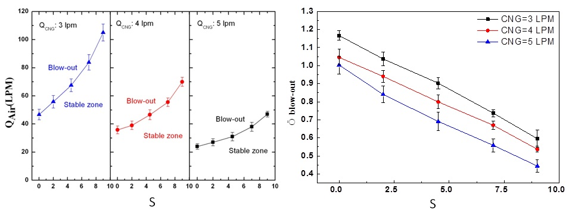

Cold flow visualization
-

- Flow visualization is carried out by illuminating the jet with a laser sheet (532 nm) passing through the center of the jet.
- The jet issued from the burner exit initially has sufficient momentum and hence the jet is undisrupted.
- Subsequently, this jet interacts with the ambient air to form vortices at the shear layer.
WCr : minimum width after flow gradually starts spreading in radial direction.
LCr : minimum length above which first vortex formation is observed.
Effect of swirl number on cold flow

- The neck region got widened with increase in swirl number.
- Increase in jet width is due to the enhanced entrainment and mixing of ambient air with the jet.
- At S = 0, first vortex formation is observed at LCr/D = 2.8 and WCr = d.
- At S = 2, LCr/D is decreased by 39 % and WCr/d increases by 36 %.
- LCr/D and WCr/D are decreased almost by 87% and 90% for S = 0 to 9.
Terminologies

Visible flame length, Lv: Total height of visible flame region.
Lift-off height, Lf: The vertical distance from burner exit to the base of lifted off flame.
Flame blow-out limits: Maximum air flow rate beyond which flame cannot be stabilized.
Momentum Flux Ratio, MFR: Ratio of tangential air jet momentum to the axial air jet momentum

Effect of swirl on visible flame and lift-off

- The luminous zone height increases with increase in fuel flow rate.
- With increase in swirl number, the luminous zone of the flame reduces.
- The lift- off height (Lf) decreases with increase in swirl number.
Effect of swirl on visible flame length

- Visible flame length, Lv increases with momentum flux ratio, MFR = 3–30 and remains almost constant beyond MFR = 30.
- Almost 25 % reduction in flame length is achieved at S = 9 and MFR.
- In buoyancy dominant flow, kinetic energy of flow is not sufficient, so reaction zone is distributed, leading to an increase in flame length.
- In momentum dominant regime, enough kinetic energy leads to better mixing of reactants and thus results in negligible change in Lv.
- Swirling improves mixing in radial direction (as discussed in cold flow), therefore length of combustion zone and thereby Lv decreases.
Effect of swirl on blowout limit

- Flame blowout is examined by varying the air flow rate until the flame blows out.
- Blowout limit gets enhanced with increase in S = 0–9 for fuel flow rate of 3–5 lpm.
- For 3 lpm fuel flow rate and S = 0, overall F near blow out is ~ l.2.
- A minimum FLBO (= 0.44) is observed for 5 lpm fuel flow rate and S = 9.